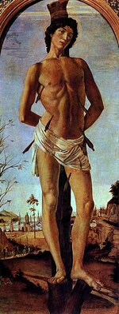
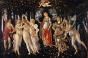
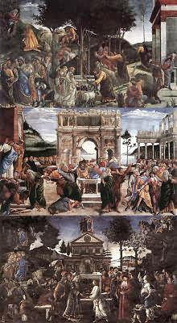
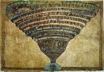
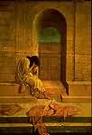

Sandro Botticelli
Cliquez sur les images pour les agrandir
1 
2 
3 
4 
5 
6 
7 
8 
9 
10 
11 
12 
13 
14 
15 
16 
17 
18 
19 
20 
21 
22 
Alessandro di Mariano Filipepi, dit Sandro Botticelli
(Florence 1445 - Florence 1510)

Introduction
Fils du tanneur florentin Mariano Filipepi, Alessandro, dit Sandro, reçut le surnom de Botticelli pour une raison qui reste incertaine. Vers 1464, il entra dans l'atelier de Filippo Lippi pour trois ans environ. S'il mit à profit l'enseignement de son maître, créateur de formes à la fois denses et élégantes, il semble avoir pris encore plus d'intérêt aux expériences de deux artistes appartenant à la seconde génération de la Renaissance florentine : Andrea Verrocchio, dont il fut un moment l'aide, et Piero Pollaiolo. Leur style nerveux et raffiné tirait un parti nouveau de l'anatomie et, chez le second, de la représentation du mouvement. Par l'attrait de sa manière ondoyante, le sculpteur Agostino di Duccio (1418-après 1481) devait aussi contribuer à la formation de Botticelli.
Le peintre à la recherche de son style
De cette première période datent plusieurs Vierges à l'Enfant (1), généralement accompagnées d'anges, d'une grâce aristocratique ; on y voit l'influence de Lippi faire place progressivement à celle de Verrocchio. Parmi ces Madones, on peut citer celles de l'Accademia et de la galerie des Offices à Florence, de la pinacothèque de Capodimonte à Naples, du musée Fesch à Ajaccio, du Louvre, de la National Gallery de Londres, de la National Gallery de Washington, etc. C'est en 1470, grâce à l'appui d'un homme de confiance des Médicis, Tommaso Soderini, que Botticelli obtint sa première commande officielle : la Force (2), figure allégorique pour le Tribunal de commerce de Florence. Ce panneau, aujourd'hui aux Offices, fait prévaloir définitivement sur l'influence de Lippi celle de Piero Pollaiolo- auquel on avait d'abord demandé de peindre la série complète des sept Vertus- et celle de Verrocchio. La Madone avec six saints (3) (Offices) est proche de la Force par le style et sans doute par la date. En 1472, Botticelli se fit inscrire à l'académie de Saint-Luc. C'est vers ce moment qu'il peignit les deux petits panneaux de l'Histoire de Judith (Offices), au faire précieux et brillant. Le Saint Sébastien (4) du musée de Berlin, provenant peut-être de Santa Maria Maggiore de Florence, leur paraît légèrement postérieur ; l'anatomie assez tendue rappelle Pollaiolo, mais l'expression méditative traduit une spiritualité plus profonde. En 1474, Botticelli fut appelé à Pise pour y compléter le cycle des fresques du Campo Santo, mais il ne put exécuter ce projet.
Le mécénat des Médicis
Revenu à Florence, Botticelli fut chargé d'orner d'une figure de Pallas l'étendard de Julien de Médicis, pour une joute donnée en 1475 sur la piazza Santa Croce : les peintres de l'époque ne dédaignaient pas ce genre de tâches. Botticelli était ainsi entré en rapport avec le cercle des Médicis. C'est un ami de l'illustre famille, le changeur Giovanni Lami, qui lui commanda vers la même date, pour sa chapelle à Santa Maria Novella, le panneau de l'Adoration des Mages (5) (Offices), d'une composition très dense, première œuvre majeure du peintre, qui s'y est représenté lui-même en compagnie de plusieurs Médicis : Cosme l'Ancien, Pierre Le Goutteux, Jean, Julien, Laurent. On peut en rapprocher de beaux portraits individuels : celui d'un homme tenant une médaille de Cosme l'Ancien (Offices), celui de Julien de Médicis (National Gallery, Washington).
En 1478, Botticelli fut chargé de peindre les effigies des membres de la conjuration des Pazzi, pendus après leur échec ; cet ouvrage de circonstance n'a pas subsisté. C'est vers la même date que l'artiste acheva la Madone avec huit anges du musée de Berlin, « tondo » provenant sans doute de San Salvatore al Monte, et surtout son tableau le plus illustre, le Printemps (6) (La Primavera), commandé en 1477 pour deux frères Médicis, Lorenzo et Giovanni di Pierfrancesco, et placé dans la villa di Castello, près de Florence (aujourd'hui aux Offices). La grâce linéaire qui s'y épanouit, prêtant une apparence sensible au monde idéal des penseurs néoplatoniciens et attestant du même coup que Botticelli avait trouvé un langage totalement personnel, inspire aussi les deux fresques allégoriques de la villa Tornabuoni-Lemmi (aujourd'hui au Louvre), dont les dates ne sont pas connues : un jeune homme devant l'assemblée des Arts, personnifiés par des figures féminines ; une jeune fille recevant des présents de Vénus, qu'accompagnent les Grâces.
L'intermède romain
C'est en 1481 et 1482 que prend place le séjour de Botticelli à Rome, épisode capital dans sa carrière. Aux termes d'un contrat signé le 27 octobre 1481, le pape Sixte IV lui demandait de s'associer avec Cosimo Rosselli (1439-1507), Ghirlandaio et le Pérugin - auxquels devaient bientôt s'ajouter Signorelli, le Pinturicchio (1554 ?-1613) et Piero di Cosimo (vers 1462-1521) - pour peindre à fresque, sur les parois de la chapelle qu'il venait de faire construire au Vatican, dite « chapelle Sixtine », des histoires saintes mettant en parallèle l'Ancien et le Nouveau Testament, et contenant en même temps des allusions au ministère du pontife. La part de Botticelli consiste en trois de ces compositions : la Jeunesse de Moïse, le Châtiment des lévites rebelles et la Tentation de Jésus-Christ (7). Il est à remarquer que chacune d'elles, obéissant à une tradition médiévale, rassemble plusieurs épisodes. La brillante Adoration des Mages de la National Gallery de Washington est sans doute un autre témoignage de l'activité romaine du maître.
La période de gloire à Florence
À Florence, l'humanisme passionnément cultivé par Laurent le Magnifique et son entourage trouvait en Botticelli son meilleur interprète dans le langage de l'art. C'est encore pour Lorenzo et Giovanni di Pierfrancesco qu'il peignit, peu après son retour, les deux célèbres tableaux mythologiques de la villa di Castello, aujourd'hui aux Offices : Minerve et le Centaure (8), la Naissance de Vénus (9) ; et c'est probablement pour le Magnifique qu'il représenta, d'après Boccace, l'Histoire de Nastagio degli Onesti (10), en quatre panneaux, dont trois sont au Prado de Madrid et un dans une collection particulière des Etats-Unis. Le tableau de Mars et Vénus (11) (National Gallery, Londres) fut peut-être commandé par une autre famille illustre, les Vespucci. Autour de 1485, on vit Botticelli revenir au thème de la Madone, avec l'aisance de la maturité ; les variations les plus célèbres en sont la Madone au livre du musée Poldi Pezzoli à Milan, la Madone du Magnificat (12) et la Madone à la grenade des Offices, l'une et l'autre peintes en « tondo », enfin la Madone Bardi (13) (Berlin), commandée par Agnolo Bardi pour sa chapelle à Santo Spirito de Florence. Peu avant 1490, le peintre obtint la commande, assez rare dans sa carrière, de deux ouvrages de dimensions importantes : le Retable de saint Barnabé (14) (Offices), pour la confrérie florentine des médecins et des pharmaciens, réunissant sur le panneau principal, devant un fond d'architecture, la Vierge assise sur un trône, six saints et quatre anges, tandis que des scènes diverses sont représentées à la prédelle ; le Retable de saint Marc (Offices), pour la corporation des orfèvres, avec le Couronnement de la Vierge et quatre saints au panneau principal, des histoires saintes à la prédelle, le tout attestant l'intervention d'élèves.
|
Illustrations de La Divine Comédie de Dante Sandro Botticelli commence à illustrer La Divine Comédie de Dante à la demande de Lorenzo di Pier Francesco di Medici, vers 1490. Ses dessins permettent de partager la fascination de l'artiste florentin pour ce chef d'œuvre de poésie et d'humanisme imaginé par Dante Alighieri.
|
La crise finale
La mort de Laurent le Magnifique, en 1492, mit un terme à la période la plus brillante de la civilisation florentine. Après les malheurs que le mauvais gouvernement de Pierre de Médicis valut à la cité, la dictature théocratique de Savonarole eut raison de l'humanisme. La crise politique et morale de Florence explique pour une large part celle dont Botticelli devait donner les signes vers la fin de sa vie. Ses derniers ouvrages traduisent une exaltation du sentiment religieux à laquelle l'influence de Savonarole n'est pas étrangère.
Au cours de cette période, qui est également celle des dessins pour La Divine Comédie de Dante (15), on ne compte qu'un seul tableau important à sujet profane, la Calomnie, peint pour Antonio Segni d'après les descriptions du chef-d'œuvre antique d'Apelle ; encore l'humanisme y est-il pénétré de méditation chrétienne. Déjà, l'Annonciation (16) peinte vers 1490 pour Santa Maria Maddalena dei Pazzi (Offices) renouvelait le thème par des attitudes mouvementées et un climat dramatique dont la Vierge debout avec l'Enfant embrassé par saint Jean-Baptiste (17) (palais Pitti), postérieure de quelques années, offre de nouveau l'exemple dans une mise en page singulièrement hardie. Les deux Pietà peintes vers 1495, celle de la pinacothèque de Munich (18) et celle du musée Poldi Pezzoli à Milan, portent la tension tragique à son comble, et c'est un sentiment d'angoisse qu'exprime la figure isolée dite de La Derelitta (19) (palais Rospigliosi, Rome), sans doute celle de la Thamar abandonnée. Cela n'empêchait pas Botticelli de peindre en même temps de petits panneaux à la facture précieuse, dans un langage moins âpre et cependant adapté à l'expression de la vie intérieure : le Saint Augustin écrivant des Offices, l'Annonciation et la Communion de saint Jérôme (20) du Metropolitan Museum de New York, les scènes de la Vie de saint Zénobe représentées sur quatre panneaux de coffre (Londres, New York et Dresde). Enfin, les prédications de Savonarole semblent avoir directement inspiré la Nativité mystique (21) de la National Gallery de Londres (1501) et la Crucifixion avec une vue de Florence (22) du Fogg Art Museum à Cambridge (Massachusetts).
Quand Botticelli mourut, de jeunes artistes donnaient à la Renaissance une orientation nouvelle : Michel-Ange, Léonard de Vinci, Andrea del Sarto, Raphaël. Sa peinture, déjà démodée, allait tomber dans l'oubli, et il faudra attendre le XIXe s. pour qu'elle soit remise à la place qu'elle mérite.
Ligne, mouvement et couleur
Dans la Renaissance florentine, on discerne un grand courant dont des peintres comme Masaccio et Uccello furent les initiateurs au cours de la première moitié du XVe s., et dont l'ambition principale était de représenter un monde ou les apparences sensibles sont soumises aux lois de l'intelligence, ou des volumes denses occupent un espace organisé rationnellement par la perspective géométrique.
D'une façon générale, Botticelli ne donne pas la primauté à cet effort, il va même souvent jusqu'à le contredire, non qu'il n'ait pas réussi à prouver qu'il en fût capable : l'Adoration des Mages des Offices et celle de la National Gallery de Washington offrent l'une et l'autre une composition magistralement calculée en profondeur et dont la stricte convergence obéit à un principe d'unité ; le Saint Augustin peint à fresque dans l'église d'Ognissanti à Florence (vers 1480) fait preuve, par le relief de la figure, d'une autorité qui rappelle Andrea del Castagno, tandis que la représentation des accessoires y dénote un réalisme méticuleux et robuste, qu'il est assez rare de rencontrer dans l'œuvre du peintre.
Botticelli aurait pu persévérer dans ces recherches, mais sa vision vraiment personnelle est celle d'un monde plus arbitraire, qu'il a su parer d'une poésie fascinante. Les figures y sont non pas échelonnées selon les exigences d'un espace souverain, mais plutôt présentées sur un plan très rapproché du spectateur, devant un fond tendant à limiter la profondeur, qu'il emprunte ses éléments à l'architecture, à des rideaux ou même au paysage. Parfois ces figures épousent avec grâce la forme circulaire du « tondo » (Madone du Magnificat), parfois elles déterminent une composition en frise (le Printemps), parfois même elles s'ordonnent selon une mise en scène de type médiéval et d'intention théologique (fresques de la chapelle Sixtine, Nativité de Londres) ; mais ce qui les assemble, c'est un rythme souple et comme musical, traduisant le mouvement d'une sorte de danse qui empêche les formes de peser. Ce mouvement, essentiel au monde de Botticelli, est saisi par le trait, qui a plus d'importance que le volume. Nerveux, imprévu, d'une sensibilité très personnelle, il fait ondoyer la figure humaine ou parfois la tourmente, la brise selon le caprice du peintre ; il insiste sur les accidents des contours, sur les particularités asymétriques des visages ; mais son irrégularité lui évite précisément de se confondre avec l'arabesque décorative : il est l'expression de la pensée.
Cependant, la primauté du trait ne suppose pas, chez Botticelli, cette indifférence à la matière picturale qu'on prête souvent à l'école florentine. Le raffinement de sa facture et son goût pour la couleur apparaissent surtout dans une série de petits tableaux précieux comme des enluminures, qu'on rencontre tout au long de sa carrière, de l'Histoire de Judith à la Vie de saint Zénobe. Mais cela reste vrai des ouvrages de plus grand format, qu'ils soient peints à fresque, à tempera ou surtout à l'œuf. Le coloris y est tantôt éclatant, comme dans la Madone du Magnificat, tantôt plus mat, comme dans la Naissance de Vénus, ou un peu assourdi, comme dans le Printemps ; il est toujours harmonieux et transparent, et semble pénétré d'une lumière cristalline.
Humanisme et christianisme
Le style linéaire et la grâce inquiète de Botticelli feraient peut-être de celui-ci un précurseur des maniéristes du XVIe s., s'il n'avait d'abord exprimé les exigences spirituelles de son temps. L'œuvre de Botticelli est tributaire de l'humanisme florentin, et plus particulièrement de la pensée néoplatonicienne qui florissait dans l'entourage de Laurent le Magnifique, ayant en Marsile Ficin son plus éloquent interprète. Selon cette pensée, il fallait voir dans le monde sensible le reflet du monde des idées. Aussi bien l'humanisme apparaît-il rarement chez Botticelli sous un aspect archéologique, exception faite pour la représentation de certains monuments, tels que l'arc de Constantin dans les fresques de la chapelle Sixtine, ou pour la reconstitution de la Calomnie d'Apelle d'après les textes de Lucien et de L. B. Alberti, exercice qui eût été laborieux sans le souffle dramatique qu'y a mis le peintre. Il s'agit plus souvent de mythes dont Botticelli, en accord avec ses mécènes, a cherché à exprimer le contenu, d'une manière parfois assez ésotérique. Le Printemps, par exemple, d'interprétation sujette à controverse, semble opposer de part et d'autre de Vénus l'amour charnel et les aspirations de l'âme. La Naissance de Vénus serait un hymne à la fécondité universelle, et Minerve et le Centaure un symbole des tendances contradictoires de la nature humaine.
Tout cela est dit avec une retenue qui prouve que Botticelli gardait les yeux fixés sur l'idéal chrétien. On passe sans heurt de ses tableaux profanes à sa peinture sacrée, ou l'approfondissement du sujet n'est pas moins remarquable : humanisme et religion sont pour lui les deux faces d'une même recherche spirituelle. Mais la sérénité qui domine dans les Madones de la jeunesse fait place peu à peu à un climat d'inquiétude. Déjà la Madone à la grenade exprime le pressentiment de la Passion. Ce pessimisme s'accentue dans les dernières années du peintre avec la mise en question de l'humanisme. Il éclate sur un ton tragique avec les deux Pietà, et la Crucifixion du Fogg Art Museum clôt l'œuvre par une sorte de prédiction des malheurs de Florence.

© 2006 Umanista.Net